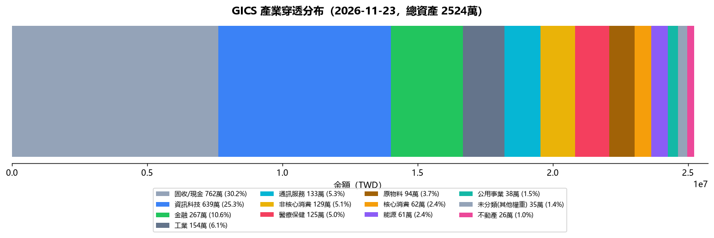

| 項目 | 內容 | 影響 |
|---|---|---|
| 總資產 | 25,235,973.0 TWD | 流動資產（不記錄不動產）；負債比（含不動產）52.2%｜金融資產負債比 122.6%（負債÷金融資產） |
| 本月帳務因素 | -396,607 TWD | 非市場虧損（日幣匯率記錯＋ETF 除息缺口），不計入投資績效；扣帳務後資產變動 -1,280,406（-4.76%，仍含金流，非報酬率）｜本月績效拆解 |
| 本月實質市場變化 | -1,280,406 TWD | -4.76%（帳面 − 帳務因素；買進/賣出視為內部移轉、配息已入現金）｜資產變動 -1,677,013（-6.23%）另含 帳務 -396,607、投入 +106,800、現金淨流 +85,001｜跌幅檢討 |
| 總負債 | 30,940,005 TWD | 總負債合計（含房貸、保單借貸、質押） |
| 本月領息 | 158,296 TWD | 保單 40,726 + ETF 17,120 + 基金 100,450 |
| 被動月收 | 212,296 TWD | 實收：配息 158,296 + 房租 54,000｜預期：房租 80,100 + 配息保守 100,000 |
📌 口徑速記：月支出 159,210（v4 定版）｜配息 158,296（實收=常態）/ 100,000（保守）｜被動保守 180,100（配息 100,000 + 房租 80,100）
⚠️ 配息為截至今日實收，月底前依配息接力時程陸續補齊（撥回入帳後覆蓋率更高）
🕒 資料新鮮度：🟡證券5天｜🟡國泰基金6天｜🟡鉅亨基金6天｜🟡安聯保單5天｜🟡第一金保單5天｜🟡現金5天 → 可信基準日 2026-11-17（國泰基金，落後 6 天）
🟡 注意｜HOLD：不需操作，但風險需持續監控
只看四件事：今天賺賠、為什麼、風險在哪、要不要動。
| 帳面變動 | -456,460 （-1.78%）｜總資產 25,235,973 |
|---|---|
| 分項貢獻 | 台股／證券 +69,240｜基金 -273,153｜保單 -232,140｜現金 -20,407 |
| 估值日 | 台股 2026-11-23 收盤｜美股／費半 前一交易日 2026-11-22（T+1 反映於基金與保單淨值） |
基金淨值有 T+1 時差：今日顯示的美股部位漲跌，實際是前一交易日的價格。不同交易日的數字不得當成同一天的避險效果。
全面上漲。今天沒有可歸因的防守效果，漲幅來自市場本身。
對照：台股加權 36,811.89 (+2.16%)｜費半 8,408.59 (-10.73%)（前一交易日）
A｜配置＝互斥、分母總資產、總和 100%（下表各桶互不重複）；B｜風險＝多維度重疊、不可相加（GICS 產業、個股重複、幣別）。
| 今日最大拖累 | 基金 -273,153 |
|---|---|
| 美股超配 | 36.7%（目標 30%／硬上限 40%）＝目前最大單一風險 |
| 科技（雙口徑） | 14.4%（桶口徑：美股科技桶，上限 15%） ／ 25.3%（GICS 產業穿透：含台股半導體與基金間接持股） 兩者衡量不同維度且重疊，不可相加；GICS 完整度 98.6%、資料日 2026-11-23 |
| 連動與歷史實測 | 台股／證券×基金 -0.09｜台股／證券×保單 -0.04（30 日，n=30）｜過去 10 個台股下跌日中，各桶平均變動：台股／證券 -2.74%、基金 -0.14%、保單 -0.13% 相關性只描述同向、非因果；歷史不保證未來 |
| 重複持股（跨基金） | NVIDIA 527,222（5 檔）｜APPLE 469,360（5 檔）｜MICROSOFT 375,081（5 檔）；前三檔合計 1,371,663＝5.44% 總資產（僅前十大內，實際曝險更高） |
| 持股穿透完整度 | 已穿透 82.3%／部分穿透 6.4%／未穿透 11.3% 未穿透不等於低風險；重複持股僅就已知商品合併 |
| 高股息不是防禦 | 防守型配息 17.2% 為台股高股息 ETF，實測週跌幅：00878 -9.11%（自 2026-11-17）｜0056 -9.05%（自 2026-11-17）（與台股同向，不列為防禦資產） |
| 債券與現金 | 債券 25.7%／現金 4.8%；防禦效果以壓力測試驗證（下表），不看比例本身 |
| 槓桿 | 質押維持率 191.9%（借款 5,900,000／池 11,320,627）｜距內部停止線 189% 需跌 1.65%｜距銀行通知 160% 需跌 16.61% |
| 資產分類（重新歸類） | 代表標的 | 金額 | 占比 | 防禦判定 |
|---|---|---|---|---|
| 台股成長型 | 0050／006208／主動台股 | 2,929,333 | 11.6% | 成長型，非防禦 |
| 股票收益型 | 00878／0056／00919 等高股息 | 4,347,902 | 17.2% | 不列防禦（與台股同向） |
| 海外股票型 | 美股 ETF／美股基金 | 9,253,991 | 36.7% | 成長型，非防禦 |
| 固定收益型 | 債券基金／債券 ETF | 6,479,624 | 25.7% | 需以股債同跌情境驗證 |
| 流動性防禦型 | 現金／存款 | 2,105,448 | 4.8% | 可防禦（對比 70 萬底線） |
| 分散風險型 | 黃金 | 119,675 | 0.5% | 衛星，避險強度以 0 計 |
配息率不等於報酬；債券可能因利率上升而下跌；未完成穿透的基金不得假設為低風險。
| 下跌壓力測試 | 資產損失 | 總資產 | 淨值（含房產） | 質押維持率 | 現金 |
|---|---|---|---|---|---|
| 股市 -10% | -1,653,123 | 23,582,850 | 26,659,908 | 172.7% | 2,105,448 ✅ ≥底線 |
| 股市 -20% | -3,306,245 | 21,929,728 | 25,006,786 | 153.5% ⚠️ 已觸及通知線 | 2,105,448 ✅ ≥底線 |
| 股市 -30% | -4,959,368 | 20,276,605 | 23,353,663 | 134.3% ⚠️ 已觸及追繳線 | 2,105,448 ✅ ≥底線 |
| 股債同跌（股 20%／債 5%） | -3,630,226 | 21,605,747 | 24,682,805 | —（池內股債比重未取得） | 2,105,448 ✅ ≥底線 |
| 流動性壓力（股 20%＋維持率惡化） | -3,306,245 | 21,929,728 | 25,006,786 | 153.5%（回內部停止線需還 1,100,054） ⚠️ 已觸及通知線 | 2,105,448 ✅ ≥底線 |
假設情境，不是預測。股票類 16,531,226（台股＋美股＋高股息，高股息不當防禦）、債券 6,479,624、現金 2,105,448； 股票全額受衝擊、債券與現金不動、借款不變、不計配息再投入；質押池以「與股市同幅」為最保守假設。
| 今日行動 | 注意｜維持 HOLD：不因單日上漲而加碼，也不因短期下跌而恐慌減碼；上列風險持續監控。 |
|---|---|
| 需要注意 |
|
| 調整觸發條件 |
|
G1／G2／G3 HOLD 未解除；本卡不產生交易授權、不自動加減碼、不解除凍結。壓力測試只供理解風險。
次要（績效，不作判斷用）：今日 帳面 -1.78% vs 台股 +2.16%（-3.94pp）｜本週 -4.53% vs 台股 -8.18%（+3.65pp）｜匯兌 -75,603（美元資產 17,670,891 × 台幣 -0.43%）
| 本月累積報酬率 | -6.56% 🔴 紅燈｜重大回撤 |
|---|---|
| 本月實質市場變化 | -1,280,406 TWD （帳面 − 帳務因素；買進/賣出視為內部移轉、配息已入現金；累計未實現損益不在此列） |
| 距下一級警戒 | 已達最深一級（紅燈） |
| 壓力情境（資產價格同幅下跌） | -5%：總資產 24,079,447（-4.58%）、質押 LTV 54.86%（維持率 182.3%）、回 53% 需還 200,064｜-10%：總資產 22,922,920（-9.17%）、質押 LTV 57.91%（維持率 172.7%）、回 53% 需還 500,061 |
| 當日投資風險裁示 | 防守｜提出減碼檢視清單（需你核准；不自動執行） |
口徑：TWR（時間加權、含配息與匯率）｜資料 as-of 2026-11-23（23 個估值日）。 警戒門檻：月累積 -1% 黃燈／-2% 橘燈／-3% 紅燈（相對口徑，不受資產規模影響）。 15 日滾動損益只作歷史風險校準，不代表月累積損益。影子模式（2026-11-05～2027-02-05）：只顯示燈號，不觸發交易、不改 G1/G2/G3。
| 戰略類別 | 金額 TWD | 佔比 | 目標 | 缺口 |
|---|---|---|---|---|
| TW 台股市值型 含證券、平台基金與保單穿透部位，非證券帳戶市值；不同資產類別可能涉及穿透歸類 | 2,929,333 TWD | 11.6% | 10% | +1.6pp |
| 🇺🇸 美股市值型 | 9,253,991 TWD | 36.7% | 30% | +6.7pp |
| └ 科技股 | 3,636,595 TWD | 14.4% | 15% | -0.6pp |
| └ 非科技 | 5,617,396 TWD | 22.3% | ||
| 🛡️ 防守型配息 | 4,347,902 TWD | 17.2% | 30% | -12.8pp |
| 💵 債券 | 6,479,624 TWD | 25.7% | 25% | +0.7pp |
| 💵 安全現金（桶位＝餘數法） | 1,205,448 TWD | 4.8% | 5% | -0.2pp |
配置比例依總資產計算（分母＝總資產，已含指定款、在途及衛星資產）；各桶金額依既定分類統計。
防禦維度另以「總資產－指定用途款」為分母（24,335,973 TWD，指定用途款 900,000），與本表配置比例不可互換。管理費~1.5%，偏高於配息收益率。
【台股/大盤】 加權指數：36,811.89 (+2.16%) 台積電：2,030.00 (+1.50%) 【美股/外資】 美股：道瓊 48,147.33 (-1.93%) / 納指 22,617.73 (-5.28%) / S&P 6,910.39 (-3.70%) 費半：8,408.59 (-10.73%) 【CPI/利率】 美國CPI：未取得（FRED 無回應） 【賣出訊號】 • 費半跌 -10.73% 【買進訊號】 • 台股大漲 2.16% 【最新市場消息】 • 台股注入強心針？南亞3檔「國安基金護盤概念股」飆漲停 吸金1155億元 (來源：tw.stock.yahoo.com) • 最搶手AI職缺出爐！輝達Q4營收衝1300億美元 帶動台積電6台廠人力需求爆增 (來源：tw.stock.yahoo.com) • 台股慘綠療傷行銷! !美業推出虧幾%折幾% 餐酒館虧1萬送1生蠔 (來源：tw.stock.yahoo.com) 【持倉關聯分析】 台股持倉市值型成長 2,929,333 TWD，今日大盤上漲 2.16%，動能轉強。 【情報重點（含持倉關聯）】 🔴 費半 今日 8,408.59 (-10.73%)，市場情緒看跌。（影響: ） 🟡 台股加權 今日 36,866.52 (+2.31%)，市場情緒看漲。（影響: ） ✅ 台積電 今日 2,035.00 (+1.75%)，市場情緒看漲。（影響: 0050）
保單現值 8,856,483 TWD（安聯 A+B 6,989,820 + 第一金 M&G入息基金A(美元避險月配) 100%（ID05，11/20 淨值 9.8507） 1,866,663），本月配息合計 40,726 TWD。每日推算 9,103,839 TWD（NAV 基準 2026-11-20，誤差 -0.20%、覆蓋 35.1%）。落實利潤再投資 SOP，於 T+4 最晚轉換申請日才執行 relay 轉換。
證券總市值 2,365,710 TWD（14檔）。本月已收配息：17,120 TWD。前三大：00878 18.6%、006208 17.3%、009816 9.1%。0056 凍結質押中，短期無法加碼。
| ETF | 狀態 | 除息日 | 配息 | 發放日 |
|---|---|---|---|---|
| 0050 | ✅ 已除息 | 7/21(二) | 0.6元 | 8/10 已領 |
| 006208 | ✅ 已除息 | 7/16(四) | 4.75元 | 8/10 已領 |
| 0056 | ✅ 已除息 | 7/21(二) | 1.35元 | 8/10 已領 |
| 00984A | ✅ 已除息 | 7/16(四) | 0.415元 | 8/10 已領 |
| 00888 | ✅ 已除息 | 7/27(一) | 1.753元 | 8/20 已領 3,496（除息時 2,000 股） |
| 00983D(8月) | ✅ 已除息 | 8/17(一) | 0.06元 | 9/10 已入帳 1,190 |
| 00878 | ✅ 已除息 | 8/18(二) | 1.01元 | 9/11 已入帳 15,150 |
| 00713 | ✅ 已除息 | 9/21(一) | 1.25元 | 10/13 已入帳 2,490（預估 2,500，扣匯費 10） |
| 00981A | ✅ 已除息 | 9/16(三) | 0.63元 | 10/13 已入帳 2,510（公告 0.63/股 預估 5,040；實收約 0.315/股＝半數 → 配息率或股數待確認） |
| 00983D(9月) | ✅ 已除息 | 9/16(三) | 0.061元 | 10/14 已入帳 1,210（預估 1,220，扣匯費 10） |
| 00919 | ✅ 已除息 | 9/16(三) | 1.1元 | 10/15 已入帳 6,590（預估 6,600，扣匯費 10） |
| 00918 | ✅ 已除息 | 9/18(五) | 1.75元 | 10/15 已入帳 1,740（預估 1,750，扣匯費 10） |
| 0056(10月) | ✅ 已除息 | 10/22(四) | 1.72元 | 11/11 待入帳 |
| 00984A(10月) | ✅ 已除息 | 10/19(一) | 0.473元 | 11/13 待入帳 |
| 00888(10月) | ✅ 已除息 | 10/27(二) | 1.5元 | 11/20 待入帳 |
| 00927(10月) | ✅ 已除息 | 10/19(一) | 2.0元 | 11/13 待入帳 |
| 00983D(10月) | ✅ 已除息 | 10/19(一) | 0.061元 | 11/12 待入帳 |
| 006208(11月) | ✅ 已除息 | 11/17(二) | 3.88元 | 待確認（Yahoo 未提供發放日） |
| 00983D | 🔜 下一梯次 | 11/17(二) | 待公告元 | 12/10 前後 |
| 00984A | 🔜 下一梯次 | 2027/1 | 待公告元 | |
| 0056 | 🔜 下一梯次 | 2027/1 | 待公告元 | |
| 00888 | 🔜 下一梯次 | 2027/1 | 待公告元 | |
| 00878 | 🔜 下一梯次 | 11/17(二) | 待公告元 | 12/11(五) |
| 006208 | 🔜 下一梯次 | 11月中（待公告） | 待公告元 | |
| 0050 | 🔜 下一梯次 | 2027/1 | 待公告元 | |
| 00927 | 🔜 下一梯次 | 2027/1 | 待公告元 | |
| 00919 | 🔜 下一梯次 | 12月（待公告） | 待公告元 | |
| 00918 | 🔜 下一梯次 | 12月（待公告） | 待公告元 | |
| 00713 | 🔜 下一梯次 | 12月（待公告） | 待公告元 | |
| 00981A | 🔜 下一梯次 | 12月（待公告） | 待公告元 |
房租月收 80,100 TWD〔常態應收；當月已收 54,000、待收 23,100.0〕，覆蓋月支出 50%。當月應收 77,100 = 大義街1樓24,000+大義街23樓21,000+洲際W30,000+管理費2,100｜已收 大義街1樓24,000+洲際W30,000（54,000）｜待收 23,100可動用流動資金 1,205,448 TWD（Moneybook 真值 2,105,448 − 指定清償款 900,000），餘裕充足 ✅
指定用途款 590萬＝✅ 元大證金 96萬＋✅ 安聯-已轉 200萬＋✅ 安聯-10/1 101萬＋✅ 第一金-10/1 101萬＋⏳ W房貸預繳 20萬＋⏳ 國泰保留 70萬＋⏳ 未用罄 2萬（轉帳中者待 MB／截圖確認才入帳）
基金總市值 11,908,332 TWD ＝ 鉅亨網 587,705 ＋ 國泰基金 11,320,627（富達 5,440,807 + 聯博 945,309 + B11 4,934,511）。本月已收配息：100,450 TWD。一般申購-元大台灣卓越50ETF(0050)連結基金-台幣B配息 38,396 / 一般申購-台中銀台灣優息基金-B配息台幣 36,452 / 一般申購-安聯台灣科技基金 2,040 / 一般申購-安聯AI收益成長多重資產基金-B(月配)美元 5,870 / 一般申購-國泰台灣高股息基金B 5,430 / 一般申購-路博邁台灣5G股票基金T月配級別(台幣) 56,008 / 一般申購-聯博-全球多元收益基金AD月配美元 2,829 / 一般申購-聯博-美國成長基金AP總報酬月配美元 2,676 / 一般申購-摩根基金-JPM多重收益美元對沖A穩定月配 2,888 / 一般申購-貝萊德世界黃金A2美元 2,657 / 一般申購-貝萊德全球股票收益A6美元穩定配息 2,948 / 一般申購-貝萊德世界科技A10美元總報酬穩定配息 3,409 / 一般申購-貝萊德世界能源A10美元總報酬穩定配息 5,270 / 一般申購-貝萊德世界健康科學A10美元總報酬穩定配息 5,084 / 一般申購-貝萊德世界黃金A10美元總報酬穩定配息 2,130 / 一般申購-貝萊德全球智慧數據股票入息A11美元強化穩定配息 2,918 / 一般申購-富達全球動能多元基金A股C月配美元 2,734 / 一般申購-安聯收益成長AMg7月收總收益美元 3,246 / 一般申購-M&G入息基金A(美元避險月配)F 2,937 / 一般申購-台新美日台半導體基金A-日圓 97,252 / 自由Pay-元大台灣卓越50ETF(0050)連結基金-台幣A不配息 88,955 / 自由Pay-統一奔騰基金 59,934 / 自由Pay-路博邁台灣5G股票基金T累積級別(台幣) 155,642 / 國泰直購-富達全球動能多元B股C月配息美元 5,440,807 / 國泰直購-貝萊德智慧數據收益成長B11-美元-強化穩定月配息 4,934,511 / 國泰直購-聯博全球多元收益AD美元月配 945,309 / 一般申購_平台小計 283,174 / 平台小計 587,705 / 自由Pay_小計 350,858 / 鉅亨平台合計 657,730 / 國泰直購_小計 11,569,590
本月配息合計：40,726 TWD
| 站別 | 基金 | 配息時間 | T+4截止 | 狀態 |
|---|---|---|---|---|
| 第一站（月初） | 摩根JPM多重收益（安聯A+B；第一金 FJXX） | 月初（10/7、11/9、12/7、1/7） | 10/1（10月） | ✅ 正常運作 |
| 第二站（月中） | 安聯收益成長 + M&G入息 | 月中（安聯 10/14、M&G 10/16） | 10/8（安聯）、10/12（M&G） | ✅ 正常運作 |
| 第三站（月底） | 安聯AI收益 + 貝萊德世界科技A10 + PIMCO收益增長 | 月底（AI 10/28、PIMCO 10/28、A10/聯博 10/29） | 10/22（AI）、10/22（PIMCO）、10/23（A10） | ✅ 正常運作 |
| 基金 | 11月 | 12月 |
|---|---|---|
| 摩根JPM | 11/09→11/03 | 12/07→12/01 |
| 安聯收益成長 | 11/13→11/09 | 12/14→12/08 |
| M&G入息 | 11/20→11/16 | 12/18→12/14 |
| PIMCO | 11/24→11/18 | 12/29→12/23 |
| 安聯AI收益 | 11/25→11/19 | 12/29→12/23 |
| 聯博 | 11/27→11/23 | 12/30→12/24 |
| 貝萊德A10 | 11/27→11/23 | 12/30→12/24 |
除息日→T+4轉換截止。T+4 = 除息日前4工作日。
轉出 USDEQ3490 安聯收益成長AM穩定月收(美元)（現值 2,663,061 TWD，轉出 1,000,000 TWD／37.6%），分 3 批內部轉換，不新增資金、不動保單現值總額。
| 批次 | 申請日 | 金額 TWD | 轉入 | T+4 入帳 | 搶息 |
|---|---|---|---|---|---|
| 批 1 | 2026-11-20 | 1,000,000 | 摩根 USDEQ5440 | 2026-11-26 | ✅ 12/08 摩根除息（11/26 生效後已持有） |
| 預期位移 | 金額 TWD | 桶位變化 |
|---|
搶息規則：送件日＝除息基準日前 4 個營業日（入帳當日即算參與），提前 1 營業日較安全。系統不下單，需於安聯 App 送件後回報截圖。
| 指標 | 數值 TWD | 備註 |
|---|---|---|
| 現值 | 6,989,820 | 最新 market value |
| 本月配息 | 40,726 | 當月配息 |
| 指標 | 數值 TWD | 備註 |
|---|---|---|
| 現值 | 1,866,663 | 配息前 |
| 本月配息 | 0 | 上月底配息 |
| 銀行 | 卡片 | 繳款日 | 近期應付 TWD | 狀態 |
|---|---|---|---|---|
| 玉山銀行 | Unicard / UNI | — | 326 | ✅ 無欠款（溢繳） |
| 台新銀行 | Richart | — | 2,702 | 🔄 待扣繳 |
| 永豐銀行 | SPORT | — | 19,243 | 🔄 待扣繳 |
| 台北富邦 | momo / J | — | 10,117 | 🔄 待扣繳 |
| 國泰世華 | CUBE | — | 2,599 | 🔄 待扣繳 |
| 銀行 | 貸款名稱 | 扣款日 | 金額 TWD | 狀態 |
|---|---|---|---|---|
| 永豐銀行 | 永豐房貸 (YY) | — | 5,712,527 | — |
| 永豐銀行 | 永豐房貸 (YYDU) | — | 4,540,812 | — |
| 永豐銀行 | 永豐房貸 (XZ) | — | 2,752,005 | — |
| 國泰世華 | 國泰房貸（大義街轉貸 2.6%） | 20日 | 12,000,000 | 9/20起月付 26,000 |
| 國泰世華 | 基金質押（質押基金池 1,132.1 萬） | 2.65% | 5,900,000 | 9/29 撥款入帳 |
📋 執行中決策追蹤
| 日期 | 決策 | 狀態 | 決策卡 |
|---|---|---|---|
| 2026-11-10 | 薪資常態：已定 48,016 暫定（11/06 升等實入），12/05 完整月複核、2027-01 轉正式 | 待處理 | — |
| 2026-11-12 | 保單轉換：安聯A 收益成長 1,000,000 → 摩根 USDEQ5440（單批，月初配息第一站） | 已確認 | — |
🔧 技術債（工程／治理類 · 另冊 tech_debt.json）72 筆｜P0 1／P1 8／P2 35／未分級 25｜最舊 2026-09-16（68 天）｜⚠️ 逾 45 天未結 16 筆
| 日期 | 項目 | 金額 TWD | 狀態 |
|---|---|---|---|
| 2026-11-23 | 🔴 聯博／貝萊德A10 11/27 除息 T+4 截止（今最後送件） | ⛔ 已取消（2026-11-14 改案：三批作廢，改單批 11/20 轉摩根） | |
| 2026-11-24 | 🔄 PIMCO 11/24 除息日核對 | ⛔ 已取消（2026-11-14 改案：三批作廢，改單批 11/20 轉摩根） | |
| 2026-11-25 | 🔄 安聯AI收益 11/25 除息日核對 | 📋 核對 | |
| 2026-11-27 | 🔄 聯博 11/27 除息日核對 | 📋 核對 | |
| 2026-11-27 | 🔄 貝萊德A10 11/27 除息日核對 | 📋 核對 | |
| 2026-11-30 | 🔧 US30Y B 案 T-1 前置檢查 | — | 📋 前置檢查 |
| 2026-11-27 | ⛔ 🔄 保單轉換 批2 送件：安聯A 收益成長 300,000 → M&G（USDEQ5700） | ⛔ 已取消（2026-11-14 改為 11/20 轉摩根 USDEQ5440） | |
| 2026-11-26 | ✅ 保單轉換 T+4 生效對帳（若 11/20 送件）：摩根部位 692,399 → 約 1,692,399 | 📋 條件式核對（僅在實際送件後執行） |
🔁 配息接力時間表：💰 = 配息基準日（基準日+12天左右入帳）、🔴 = T+4 轉換截止（除息前4工作日）。三站依配息時間循環領息：第一站（10/7） → 第二站（10/14） → 第三站（10/28）。
📅 緊急應變資料：2026-11-23 13:06（台股應變分析；未觸發門檻則沿用此份；美股時段 21:30 每交易日固定更新）
【一、市場概況】今天是反彈日，不是崩跌日——但反彈的成因必須先看清。台北時間 11/23 13:05 盤中，加權指數 36,829 點（+2.21%），自 11/20 收盤 36,033.29 反彈；今日振幅異常大：盤中低點 35,442（約 -1.64%）、高點 37,108（約 +2.98%），高低差約 1,666 點（4.6%），是「開低走高、單日千點級」的走勢。權值指標台積電盤中 2,035（+1.75%）。真正的大事在外盤：上週五 11/20 美股全面崩跌——S&P 500 6,910.39（-3.70%）、納指 22,617.73（-5.28%）、道瓊 48,147.33（-1.93%）、費半 8,408.59（-10.73%）；TSM ADR 318.71（-9.48%）、輝達 125.53（-14.01%）、VIX 35.89（+26.2%）。也就是說：美股半導體單日蒸發一成，台股今天卻漲 2.21%，這個背離是今天所有判斷的核心。（盤中數據隨時變動、以官方收盤為準；新聞來源：daily_analysis.json briefing／tw.stock.yahoo.com，RSS 本次僅回傳標題層，新聞來源受限。）| 產業 | 金額 | 佔比 | 狀態 |
|---|---|---|---|
| 高科技/半導體 | 6,386,044 | 25.3 | 🟢 未達紅線 30%（當前 25.3%） |
| 金融/電信 | 3,998,611 | 15.8 | |
| 醫療/公用事業/不動產 | 1,894,035 | 7.5 | |
| 民生/工業/原物料 | 4,989,764 | 19.8 | |
| 固收與現金 | 7,622,307 | 30.2 | |
| 其他/未分類 | 345,212 | 1.4 | |
| 實物避險-黃金 | 119,675 | 0.5 | ⛔ 已結案（2026-10-30）：既有部位保留不賣；不再有後續建倉／分批指示 |
| 實物避險-石油 | 0 | 🔴 Locked（radar_state 標記，機構撤離中） | |
| 輪動閥門 | 0 |
| 產業 | 金額 | 佔比 |
|---|---|---|
| 固收/現金 | 7,622,307 | 30.2% |
| 資訊科技 | 6,386,044 | 25.3% |
| 金融 | 2,668,938 | 10.6% |
| 工業 | 1,536,307 | 6.1% |
| 通訊服務 | 1,329,673 | 5.3% |
| 非核心消費 | 1,286,628 | 5.1% |
| 醫療保健 | 1,251,186 | 5.0% |
| 原物料 | 937,665 | 3.7% |
| 核心消費 | 615,201 | 2.4% |
| 能源 | 613,963 | 2.4% |
| 公用事業 | 383,332 | 1.5% |
| 未分類(其他權重) | 345,212 | 1.4% |
| 不動產 | 259,517 | 1.0% |

| 產業 | 買什麼 | 金額 | 節奏 |
|---|---|---|---|
| 現金保留 | 台幣活存/MMF | 505,000 | 裁決 C：LTV 52.12% ≥45% 警戒 → 本週不新增部位，乾粉 505,448 全留現金；守住現金底線 700,000.0（可動用 1,205,448、乾粉 505,448；月盈餘 74,997 其中半數 37,498 屬規劃值、未入帳不動用）；防守合併 65.6%（防守承接凍結（2026-08-21 使用者：基金也有配息應合併計算）） |
US30Y 5.30%（即時讀值｜讀值日 2026-11-20） 🟡｜VIX 16｜美元信用壓力 71.5🔴｜科技 57.5｜確定收益 57.4｜地緣 43.0｜緊急應變分 65
影響：
避險現況：黃金：161,596 / 目標 105萬（已建保單32萬，剩餘PI後）｜石油：4,958 / 目標 26萬（缺口大）｜防守：合併口徑 65.6%（≥60% 已足、承接凍結）｜現金：可動用 1,205,448（帳戶層真值 2,105,448）守底線 70萬
因應三步驟：
評估已核准寫入日報 8/9 決策核心區塊（2026-08-21）
🛡️ 防禦維度 50.7%（債券＋現金/貨幣＋低波高股息防禦＋配息型基金權益＋保單內防守型高股息權益（2026-11-03 裁決 S1）＋避險衛星（2026-10-30 結案，以 0 計入）｜抗跌/LTV保護）＝ 債券 6,479,624 + 現金 1,205,448 + 低波 1,089,462 + 配息型基金權益 3,367,500 + 避險衛星（2026-10-30 結案，不計入；黃金部位保留於原五桶）
💵 收入引擎 69.5%（全配息資產+不動產租金｜現金流覆蓋）＝ 全配息資產 + 房租 80,100/月
核心：配息≠防守，兩維度分離計算、獨立風控；避險衛星以目標值計入防禦維度（現況未建倉，目標金額由避險衛星欄位動態讀取）；配息型基金權益＝B11 依官方成分 62.58/32.65/4.77（權益部位＋內部現金，內部現金不進現金桶）；現金/貨幣停泊＝可動用台幣活存，帳戶層真值與指定用途款一律由 snapshot 數字欄位動態生成（2026-09-30 P0-1 移除手寫金額）｜【2026-10-30 裁決】避險衛星整體機制結案 → 原以『目標值 1,310,000』計入之口徑作廢，改以 0 計入；理由：黃金保單 367,192 已在五桶內計入，再加會重複計算，且已作廢的配置目標不應影響配置建議。實際部位（黃金 367,192／石油 4,958）保留不賣、仍計入總資產與穿透。分母維持既定口徑＝total_assets − 指定用途款 900,000＝26,080,153（9/29 裁決），故佔比 47.7%、較原 52.7% 降 5.0pp；若以總資產 25,235,973 為分母則為 46.11%（-6.6pp），非本系統口徑。
🎯 四大市場情境（當前：區間震盪）：多頭 防禦≥40/收入≥60/LTV≤55 ｜ 震盪 防禦≥50/收入≥65/LTV≤52 ｜ 股債雙殺 防禦≥55/收入≥70/LTV≤50 ｜ 熊市 防禦≥60/收入≥70/LTV≤48
📐 現況對照（震盪標準 防禦≥50／收入≥65）：防禦 50.7% ✅（抗跌／LTV 保護；配息承接判準＝合併口徑 65.6% ≥60% ✅ 已足，兩者不同問題、勿混讀） ｜ 收入 69.5% ✅｜LTV 見第八章風險紅線（動態）
🧑💻 CIO 觀點
①配置：全面不動。LTV 52.12%≥45%觸裁決C，乾粉505,448全留現金，暫停新增部位。科技14.4%雖有法人+64百萬買超，但費半-10.73%、XLK最弱、台積電-43百萬，屬逆勢承接，不加碼；高股息防禦-175百萬、市值型-512百萬流出，防禦桶不追。僅XLP相對強勢，列觀察。 ②最大風險：科技集中疊加費半重挫的補跌風險，底層為AI資本支出預期鬆動與流動性收縮；LTV超標使槓桿無緩衝。 ③動作：維持現金、零新增；待LTV<45%自動恢復後，優先XLP與債券桶，科技僅在被動再平衡時補回。| 資產分類 | 現況% | 目標% | 偏離pp | 動作 | 精算金額 | 階梯 | 觸發條件 |
|---|---|---|---|---|---|---|---|
| 台股市值型成長 | 11.6% | 10% | +1.6 | 觀察(凍結期) | 0 | 觀察 | 僅寫入警示日誌，不產生交易建議｜rotation 交易計畫 |
| 美股市值型成長 | 36.7% | 30% | +6.7 | 觀察(凍結期) | 0 | 中等再平衡 | 計算調整金額，納入週報指示卡｜逢彈減碼 ≤20萬/次（8/19 核准） |
| 防守型配息 | 17.2% | 30% | -12.8 | 承接凍結 | 0 | 大規模再平衡 | 優先等級拉高，下週必須處理｜合併 65.6% ≥60% 凍結 |
| 債券 | 25.7% | 25% | +0.7 | 凍結 | 0 | 觀察 | 僅寫入警示日誌，不產生交易建議｜基金經理人調整（PIMCO/M&G/00983D），不另建債梯 |
| 現金/安全網 | 4.8% | 5% | -0.2 | 觀察(凍結期) | 0 | 觀察 | 僅寫入警示日誌，不產生交易建議｜底線制：超額 505,448.0 待部署（MMF 停泊）；另指定清償款 900,000 不列可部署 |
| 產業/衛星 | 動作 | 標的 |
|---|---|---|
| 核心消費 | 🟡 觀察（資金中性） | 0050(含核心消費成分:統一/大成等) |
| 能源 | ⏸ 避開（資金流出） | — |
| 醫療保健 | ⏸ 暫緩（資金流出） | 保單健康科學A2（8/24 轉換 50萬涵蓋） |
| 黃金衛星 | 🟢 順勢（COT 淨多單週增）（COT 淨多 166,132） | 00635U（PI 後分批 40/30/20，單次≤20萬） |